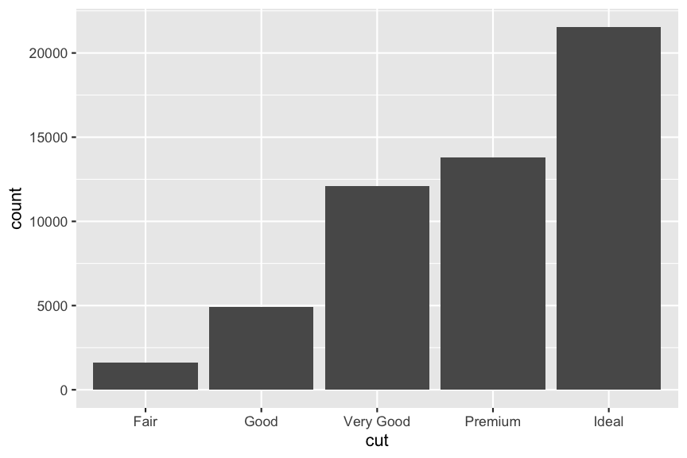

class: left, middle, inverse, title-slide # Data visualisation with ggplot2 ## Practical Skills for Biology Research II ### Niklas Mähler ### Umeå University ### 2021-10-01 --- layout: true <div class="footer"> <a href="https://github.com/maehler/psbr2/tree/main/lectures/04_data_visualisation_with_ggplot2.Rmd"> <svg viewBox="0 0 496 512" style="height:1em;position:relative;display:inline-block;top:.1em;" xmlns="http://www.w3.org/2000/svg"> <path d="M165.9 397.4c0 2-2.3 3.6-5.2 3.6-3.3.3-5.6-1.3-5.6-3.6 0-2 2.3-3.6 5.2-3.6 3-.3 5.6 1.3 5.6 3.6zm-31.1-4.5c-.7 2 1.3 4.3 4.3 4.9 2.6 1 5.6 0 6.2-2s-1.3-4.3-4.3-5.2c-2.6-.7-5.5.3-6.2 2.3zm44.2-1.7c-2.9.7-4.9 2.6-4.6 4.9.3 2 2.9 3.3 5.9 2.6 2.9-.7 4.9-2.6 4.6-4.6-.3-1.9-3-3.2-5.9-2.9zM244.8 8C106.1 8 0 113.3 0 252c0 110.9 69.8 205.8 169.5 239.2 12.8 2.3 17.3-5.6 17.3-12.1 0-6.2-.3-40.4-.3-61.4 0 0-70 15-84.7-29.8 0 0-11.4-29.1-27.8-36.6 0 0-22.9-15.7 1.6-15.4 0 0 24.9 2 38.6 25.8 21.9 38.6 58.6 27.5 72.9 20.9 2.3-16 8.8-27.1 16-33.7-55.9-6.2-112.3-14.3-112.3-110.5 0-27.5 7.6-41.3 23.6-58.9-2.6-6.5-11.1-33.3 2.6-67.9 20.9-6.5 69 27 69 27 20-5.6 41.5-8.5 62.8-8.5s42.8 2.9 62.8 8.5c0 0 48.1-33.6 69-27 13.7 34.7 5.2 61.4 2.6 67.9 16 17.7 25.8 31.5 25.8 58.9 0 96.5-58.9 104.2-114.8 110.5 9.2 7.9 17 22.9 17 46.4 0 33.7-.3 75.4-.3 83.6 0 6.5 4.6 14.4 17.3 12.1C428.2 457.8 496 362.9 496 252 496 113.3 383.5 8 244.8 8zM97.2 352.9c-1.3 1-1 3.3.7 5.2 1.6 1.6 3.9 2.3 5.2 1 1.3-1 1-3.3-.7-5.2-1.6-1.6-3.9-2.3-5.2-1zm-10.8-8.1c-.7 1.3.3 2.9 2.3 3.9 1.6 1 3.6.7 4.3-.7.7-1.3-.3-2.9-2.3-3.9-2-.6-3.6-.3-4.3.7zm32.4 35.6c-1.6 1.3-1 4.3 1.3 6.2 2.3 2.3 5.2 2.6 6.5 1 1.3-1.3.7-4.3-1.3-6.2-2.2-2.3-5.2-2.6-6.5-1zm-11.4-14.7c-1.6 1-1.6 3.6 0 5.9 1.6 2.3 4.3 3.3 5.6 2.3 1.6-1.3 1.6-3.9 0-6.2-1.4-2.3-4-3.3-5.6-2z"></path> </svg> </a> </div> --- # Data is not information <div class="tile" style="align-items: flex-end;"> <div style="width: 35%;"></div> </div> ??? Data in itself is just a collection of observations, and more often than not, they don't convey a message by itself. --- # Data is not information <div class="tile" style="align-items: flex-end;"> </div> ??? We can sort the data... --- # Data is not information <div class="tile" style="align-items: flex-end;"> <div style="width: 35%; height: 141px;"></div> </div> ??? And arrange the data... --- # Data is not information <div class="tile" style="align-items: flex-end;"> </div> ??? And finally visualise the data in a way that tells us something that the raw dataset did not. --- # Data is not information <div class="tile" style="align-items: flex-end;"> </div> ??? Then we can also proceed to build a story out of our data. How can our data help us convey a message? Going from a bar chart to a story like this is really hard work, and not something that you just do. This requires a lot of skill and insight, and is not something you learn over night. --- # Historical examples <div> <figure> <img src="https://upload.wikimedia.org/wikipedia/commons/2/29/Minard.png"/> </figure> <figcaption>Charles Joseph Minard 1869, Public domain, via Wikimedia Commons</figcaption> </div> ??? This is perhaps the most famous example of data visualisation, all categories. This is the work of Charles Joseph Minard. It was created in 1869 and shows the losses suffered by Napoleon's army on their march on Russia in 1812. The thick band illustrates the size of the army at different points during the march. The brown band is the advancing part of the army, and the black lines are the retreating parts of the army. This visualisation is famous for capturing many different types of data in a digestible format. We have the size of the army, the direction they're heading, geographical position (including distance), time, and temperature. --- # Historical examples <div style="display: flex; align-items: flex-start; justify-content: center;"> <figure style="width: 47%;"> <img src="https://upload.wikimedia.org/wikipedia/commons/thumb/2/27/Snow-cholera-map-1.jpg/1092px-Snow-cholera-map-1.jpg" alt="John Snow's cholera map"/> <figcaption>John Snow 1854, Public domain, via Wikimedia Commons</figcaption> </figure> <img src="https://static.independent.co.uk/s3fs-public/thumbnails/image/2019/04/15/08/jon-snow-got.jpg?width=1200&auto=webp&quality=75" style="width: 300px; margin-top: 1.5em;"/> </div> ??? Ok, not that Jon Snow. He knows nothing about this. It was rather the British physician, Dr. John Snow. --- # Historical examples <div style="display: flex; align-items: flex-start; justify-content: center;"> <figure style="width: 47%;"> <img src="https://upload.wikimedia.org/wikipedia/commons/thumb/2/27/Snow-cholera-map-1.jpg/1092px-Snow-cholera-map-1.jpg" alt="John Snow's cholera map"/> <figcaption>John Snow 1854, Public domain, via Wikimedia Commons</figcaption> </figure> <img src="https://upload.wikimedia.org/wikipedia/commons/thumb/c/cc/John_Snow.jpg/490px-John_Snow.jpg" style="width: 300px; margin-top: 1.5em;"/> </div> ??? He is considered the father of modern epidemiology. In the cholera outbreak in London in 1854, he talked to local residents to get more information about the area. Using this information, they were able to determine that the source of the outbreak was a water pump in the area. Note that this was before the germ theory of disease had been developed, and the prevailing hypothesis at the time was that it was spread through air-borne particles, so called "miasma", or "bad air". There is one exception in this neighbourhood, and that is the brewery. None of the workers there contracted the disease, and this is likely due to them having their daily allowance of beer and thus didn't drink from the contaminated well. --- # Historical examples <div style="display: flex; align-items: flex-start; justify-content: center;"> <figure style="width: 73%;"> <img src="https://upload.wikimedia.org/wikipedia/commons/thumb/1/17/Nightingale-mortality.jpg/1280px-Nightingale-mortality.jpg"/> <figcaption>Florence Nightingale 1858, Public domain, via Wikimedia Commons</figcaption> </figure> <img src="https://upload.wikimedia.org/wikipedia/commons/thumb/a/ab/Florence_Nightingale_%28H_Hering_NPG_x82368%29.jpg/432px-Florence_Nightingale_%28H_Hering_NPG_x82368%29.jpg" style="width: 150px; margin-top: 1.3em;"/> </div> ??? This next example has a connection to the previous one. Many of the cholera patients from Broad Street were treated at the Middlesex Hospital, where Florence Nightingale was the superintendent. She was a lot of things; statistican, considered the founder of modern nursing, and also a pioneer in graphical visualisation of statistics. She was also the main figure behind the sanitary reform, since she had noticed that many deaths could be prevented with improved sanitation. This particular figure is perhaps her most famous one. In 1854, she brought a team of nurses to care for British soldiers fighting in the Crimean War, and this figure visualises the causes of death for the soldiers they were treating. Blue represents deaths from preventable infectious disease, red represents deaths from war wounds, and black represents deaths from other causes. The diseases represented were typhus, typhoid, cholera, and dysentery. The bars are not stacked, so the number of deaths are represented as the distance from the center of the plot. From this we can clearly see that deaths from disease by far outnumber the number of deaths from war wounds. Today, these plots are referred to as coxcomb charts, or Nigthingale roses. --- # ggplot2 .pull-left[ An R package for creating graphics in a declarative fashion. Based on the Grammar of Graphics, which we will talk more about next week. Useful both for quickly visualising a dataset for exploratory purposes, but also produces publication-quality figures. It is possible to create graphics using the base functionality of R, but this has a very steep learning curve, and requires a lot of fiddling. This is something that we will not go over. ] .pull-right.left[  ] --- # Prerequisites We need to install the ggplot2 package before we can start using it. ```r install.packages("ggplot2") ``` An R package is an extension of the base R language, and something that we will talk more about next week. --- # A basic example .left-column[ ## The data ] .right-column[ `mpg` is an example dataset included in the ggplot2 package that contains fuel efficiency data for a number of cars. .small[ ```r mpg ``` ``` ## # A tibble: 234 × 11 ## manufacturer model displ year cyl trans drv cty hwy fl class ## <chr> <chr> <dbl> <int> <int> <chr> <chr> <int> <int> <chr> <chr> ## 1 audi a4 1.8 1999 4 auto… f 18 29 p comp… ## 2 audi a4 1.8 1999 4 manu… f 21 29 p comp… ## 3 audi a4 2 2008 4 manu… f 20 31 p comp… ## 4 audi a4 2 2008 4 auto… f 21 30 p comp… ## 5 audi a4 2.8 1999 6 auto… f 16 26 p comp… ## 6 audi a4 2.8 1999 6 manu… f 18 26 p comp… ## 7 audi a4 3.1 2008 6 auto… f 18 27 p comp… ## 8 audi a4 quattro 1.8 1999 4 manu… 4 18 26 p comp… ## 9 audi a4 quattro 1.8 1999 4 auto… 4 16 25 p comp… ## 10 audi a4 quattro 2 2008 4 manu… 4 20 28 p comp… ## # … with 224 more rows ``` ] .note.yellow[ <svg viewBox="0 0 352 512" style="position:relative;display:inline-block;top:.1em;height:2em;" xmlns="http://www.w3.org/2000/svg"> <path d="M176 80c-52.94 0-96 43.06-96 96 0 8.84 7.16 16 16 16s16-7.16 16-16c0-35.3 28.72-64 64-64 8.84 0 16-7.16 16-16s-7.16-16-16-16zM96.06 459.17c0 3.15.93 6.22 2.68 8.84l24.51 36.84c2.97 4.46 7.97 7.14 13.32 7.14h78.85c5.36 0 10.36-2.68 13.32-7.14l24.51-36.84c1.74-2.62 2.67-5.7 2.68-8.84l.05-43.18H96.02l.04 43.18zM176 0C73.72 0 0 82.97 0 176c0 44.37 16.45 84.85 43.56 115.78 16.64 18.99 42.74 58.8 52.42 92.16v.06h48v-.12c-.01-4.77-.72-9.51-2.15-14.07-5.59-17.81-22.82-64.77-62.17-109.67-20.54-23.43-31.52-53.15-31.61-84.14-.2-73.64 59.67-128 127.95-128 70.58 0 128 57.42 128 128 0 30.97-11.24 60.85-31.65 84.14-39.11 44.61-56.42 91.47-62.1 109.46a47.507 47.507 0 0 0-2.22 14.3v.1h48v-.05c9.68-33.37 35.78-73.18 52.42-92.16C335.55 260.85 352 220.37 352 176 352 78.8 273.2 0 176 0z"></path></svg> You can get more information about the `mpg` data by running the command `?mpg` in the console. ] ] --- # A basic example .left-column[ ## The data ## The plot ] .right-column[ ```r library(ggplot2) ggplot(data = mpg) + geom_point(mapping = aes(x = displ, y = hwy)) ``` <img src="./figures/data_visualisation_with_ggplot2_basic_plot-1.png" width="432" /> ] --- # A basic example .left-column[ ## The data ## The plot ## The library call ] .right-column[ ```r *library(ggplot2) ggplot(data = mpg) + geom_point(mapping = aes(x = displ, y = hwy)) ``` Loads the ggplot2 package. This we only have to do once in each session. ] --- # A basic example .left-column[ ## The data ## The plot ## The library call ## The initialisation ] .right-column[ ```r library(ggplot2) *ggplot(data = mpg) + geom_point(mapping = aes(x = displ, y = hwy)) ``` Initialises an empty plot using the `mpg` data. <img src="./figures/data_visualisation_with_ggplot2_basic_plot_init2-1.png" width="324" /> ] --- # A basic example .left-column[ ## The data ## The plot ## The library call ## The initialisation ## The points ] .right-column[ ```r library(ggplot2) ggplot(data = mpg) + * geom_point(mapping = aes(x = displ, y = hwy)) ``` Add a layer of points to the plot. The `aes` (aestethics) maps variables in our data to properties of the plot, and here we set the variable `displ` (engine displacement in litres) as our x-variable and `hwy` (miles per gallon on highway) as our y-variable. <img src="./figures/data_visualisation_with_ggplot2_basic_plot_points2-1.png" width="324" /> ] --- # A general scheme .big[ ```r ggplot(data = <DATA>) + <GEOM_FUNCTION>(mapping = aes(<MAPPINGS>)) ``` ] - `<DATA>`: A data frame with the data we want to visualise - `<GEOM_FUNCTION>`: The graphical layer that will represent our data - `<MAPPINGS>`: Mappings between the data and the aesthetics of the plot --- # Aesthetic mappings .left-column[ ## What are they? ] .right-column[ Associations between the data and the visual properties (aesthetics) of the plot. Different geoms have different aesthetics that are required to be set: - `geom_point`: `x`, `y` - `geom_histogram`: `x` - `geom_segment`: `x`, `xend`, `y`, `yend` .pull-left[ ``` ## # A tibble: 5 × 2 ## var1 var2 ## <int> <dbl> ## 1 1 -0.207 ## 2 2 2.28 ## 3 3 4.08 ## 4 4 1.65 ## 5 5 5.43 ``` ] .pull-right[ <img src="./figures/data_visualisation_with_ggplot2_aestetic_example_plot-1.png" width="432" /> ] ] --- # Aesthetic mappings .left-column[ ## What are they? ## Types of aesthetics ] .right-column[ - Positions (`x`, `y`, ...) - Outline colour (`colour`) - Fill colour (`fill`) - Shape (`shape`) - Transparency (`alpha`) - Size (`size`) The specific geom_function that is used will determine exactly which ones are available and how they will behave. .note.yellow[ <svg viewBox="0 0 352 512" style="position:relative;display:inline-block;top:.1em;height:2em;" xmlns="http://www.w3.org/2000/svg"> <path d="M176 80c-52.94 0-96 43.06-96 96 0 8.84 7.16 16 16 16s16-7.16 16-16c0-35.3 28.72-64 64-64 8.84 0 16-7.16 16-16s-7.16-16-16-16zM96.06 459.17c0 3.15.93 6.22 2.68 8.84l24.51 36.84c2.97 4.46 7.97 7.14 13.32 7.14h78.85c5.36 0 10.36-2.68 13.32-7.14l24.51-36.84c1.74-2.62 2.67-5.7 2.68-8.84l.05-43.18H96.02l.04 43.18zM176 0C73.72 0 0 82.97 0 176c0 44.37 16.45 84.85 43.56 115.78 16.64 18.99 42.74 58.8 52.42 92.16v.06h48v-.12c-.01-4.77-.72-9.51-2.15-14.07-5.59-17.81-22.82-64.77-62.17-109.67-20.54-23.43-31.52-53.15-31.61-84.14-.2-73.64 59.67-128 127.95-128 70.58 0 128 57.42 128 128 0 30.97-11.24 60.85-31.65 84.14-39.11 44.61-56.42 91.47-62.1 109.46a47.507 47.507 0 0 0-2.22 14.3v.1h48v-.05c9.68-33.37 35.78-73.18 52.42-92.16C335.55 260.85 352 220.37 352 176 352 78.8 273.2 0 176 0z"></path></svg> For aesthetics that have different spelling in British English compared to American English (e.g. `colour` and `color`), both variants are available, so you can choose whichever style you prefer. ] ] --- # Aesthetic mappings .left-column[ ## What are they? ## Types of aesthetics ## Multiple aesthetics ] .right-column[ ```r ggplot(data = mpg) + geom_point(mapping = aes(x = displ, y = hwy, colour = class)) ``` <img src="./figures/data_visualisation_with_ggplot2_multiple_aes-1.png" width="432" /> ] --- # Aesthetic mappings .left-column[ ## What are they? ## Types of aesthetics ## Multiple aesthetics ] .right-column[ ```r ggplot(data = mpg) + geom_point(mapping = aes(x = displ, y = hwy, colour = class, shape = drv)) ``` <img src="./figures/data_visualisation_with_ggplot2_multiple_aes2-1.png" width="432" /> ] --- # Aesthetic mappings .left-column[ ## What are they? ## Types of aesthetics ## Multiple aesthetics ] .right-column[ ```r ggplot(data = mpg) + geom_point(mapping = aes(x = displ, y = hwy, colour = class, shape = drv)) ``` <img src="./figures/data_visualisation_with_ggplot2_multiple_aes4-1.png" width="432" /> .small[ |manufacturer |model | displ| year| cyl|trans |drv | cty| hwy|fl |class | |:------------|:------|-----:|----:|---:|:--------|:---|---:|---:|:--|:-------| |chevrolet |malibu | 3.5| 2008| 6|auto(l4) |f | 18| 29|r |midsize | ] ] --- # Aesthetic mappings .left-column[ ## What are they? ## Types of aesthetics ## Multiple aesthetics ## Manual aesthetics ] .right-column[ Aesthetics can also be set manually by declaring them *outside* of the `aes` call. ```r ggplot(data = mpg) + geom_point(mapping = aes(x = displ, y = hwy), colour = "blue") ``` <img src="./figures/data_visualisation_with_ggplot2_manual_aes-1.png" width="432" /> ] --- # Aesthetic mappings .left-column[ ## What are they? ## Types of aesthetics ## Multiple aesthetics ## Manual aesthetics ] .right-column[ .note.red[ <svg viewBox="0 0 576 512" style="position:relative;display:inline-block;top:.1em;height:2em;" xmlns="http://www.w3.org/2000/svg"> <path d="M569.517 440.013C587.975 472.007 564.806 512 527.94 512H48.054c-36.937 0-59.999-40.055-41.577-71.987L246.423 23.985c18.467-32.009 64.72-31.951 83.154 0l239.94 416.028zM288 354c-25.405 0-46 20.595-46 46s20.595 46 46 46 46-20.595 46-46-20.595-46-46-46zm-43.673-165.346l7.418 136c.347 6.364 5.609 11.346 11.982 11.346h48.546c6.373 0 11.635-4.982 11.982-11.346l7.418-136c.375-6.874-5.098-12.654-11.982-12.654h-63.383c-6.884 0-12.356 5.78-11.981 12.654z"></path></svg> A common mistake when trying to set aesthetics manually is to put these *inside* the `aes` call. This will result in ggplot2 interpreting this as a constant related to the dataset, and apply this to all rows, and then set the scales for this aesthetic automatically. ] ```r ggplot(data = mpg) + geom_point(mapping = aes(x = displ, y = hwy, colour = "blue")) ``` <img src="./figures/data_visualisation_with_ggplot2_manual_aes2-1.png" width="432" /> ] --- # Aesthetic mappings .left-column[ ## What are they? ## Types of aesthetics ## Multiple aesthetics ## Manual aesthetics ## Summary ] .right-column[ When mapping a variable to an aesthetic, ggplot2 takes care of everything else: setting an appropriate scale and sets up a legend. Very flexible system for quickly visualising structure in your data. If a variable exists in your dataset, it can be mapped to an aesthetic. What if a variable that you are interested in is not in the dataset? We will get to ways of solving this next week. ] --- # Manual aesthetics .left-column[ ## Points ] .right-column[ <img src="./figures/data_visualisation_with_ggplot2_point_types-1.png" width="432" /> Some points only have outlines (1–14), some are solid (15–20), and some have separate stroke and fill colours (21–25). ] --- # Manual aesthetics .left-column[ ## Points ## Lines ] .right-column[ <img src="./figures/data_visualisation_with_ggplot2_line_types-1.png" width="432" /> ] --- # Manual aesthetics .left-column[ ## Points ## Lines ## Colours ] .right-column[ ```r colours() ``` <img src="./figures/data_visualisation_with_ggplot2_colours-1.png" width="1080" /> ] --- # Manual aesthetics .left-column[ ## Points ## Lines ## Colours ] .right-column[ Colours can also be specified using the `rgb` function, which generates a hexidecimal colour value. ```r rgb(0.8, 0.3, 0.1) ``` ``` ## [1] "#CC4D1A" ``` If you are fluent in hexadecimal, you can also specify colours directly as such. ```r ggplot(data = mpg) + geom_point(mapping = aes(x = displ, y = hwy), colour = "#CC4D1A") ``` <img src="./figures/data_visualisation_with_ggplot2_rgb_plot-1.png" width="288" /> ] --- # Facets .left-column[ ## What are they? ] .right-column[ Another way of mapping variable to aesthetics is by using facets. This is based on the concept of ["small multiples"](https://en.wikipedia.org/wiki/Small_multiple): many panels of a figure that share scales and axes, allowing for easy comparison. .center[] .smaller.center[ The Horse in Motion — Eadweard Muybridge, 1878 ] ] ??? The Horse in Motion is probably one of the oldest examples of the concept of small multiples. --- # Facets .left-column[ ## What are they? ## `facet_wrap` ] .right-column[ When we have single categorical variable with many different values that we want to facet on, we generally use `facet_wrap`. This will create one sub-plot for each level of the faceting variable. ```r ggplot(data = mpg) + facet_wrap(facets = vars(class), nrow = 2) + geom_point(mapping = aes(x = displ, y = hwy)) ``` <img src="./figures/data_visualisation_with_ggplot2_facet_example-1.png" width="432" /> ] --- # Facets .left-column[ ## What are they? ## `facet_wrap` ] .right-column[ Compare these two versions. They are visualising the same relationship (engine size vs fuel efficiency), and they are grouped by the class of car. The difference is that one uses facets, and the other uses colour. Which one is easier to read? .pull-left[  ] .pull-right[  ] ] --- # Facets .left-column[ ## What are they? ## `facet_wrap` ## `facet_grid` ] .right-column[ If we instead have two categorical variables that should be faceted, we can use `facet_grid`. One variable will then represent the rows and the other the columns. ```r ggplot(data = mpg) + facet_grid(rows = vars(drv), cols = vars(cyl)) + geom_point(mapping = aes(x = displ, y = hwy)) ``` <img src="./figures/data_visualisation_with_ggplot2_facet_grid_example-1.png" width="432" /> ] ??? Here we have the `drv` variable, the type of drivetrain of the cars, as rows and the number of cylinders representing the columns. Note that all facets have the same scales. What do you think it means if a facet is empty? --- # Geometric objects ??? So far we have talked about how we can map different variables to aesthetics in our plot, but we've only looked at scatter plots, i.e. points, so far. What if we want to represent our data differently? -- .pull-left[ .center[ <img src="figures/data_visualisation_with_ggplot2_basic_plot-1.png" width="432" /> ] ] ??? Consider this figure, that we now have seen a few times. -- .pull-right[ .center[ <img src="./figures/data_visualisation_with_ggplot2_smooth_geom_example-1.png" width="432" /> ] ] ??? And now consider this. The underlying data and the variables on the axes are the same, but they look quite different. The reason for this is that they are using different geoms. -- .pull-left.center[ `geom_point` ] -- .pull-right.center[ `geom_smooth` ] --- # Geometric objects .left-column[ ## What are they? ] .right-column[ The geometrical object that is used to represent the underlying data. Every geom function takes a `mapping` argument, but the aesthetics that you can set vary between them. For example, you can set the shape for `geom_point`, but that wouldn't make sense for `geom_line`. ] -- .right-column[ Geoms roughly correspond to the type of plot we want to create: - Scatter plot: `geom_point` - Line plot: `geom_line` - Histogram: `geom_histogram` - Boxplot: `geom_boxplot` ] -- .right-column[ The [ggplot2 cheat sheet](https://www.rstudio.com/resources/cheatsheets/) is a great way of getting an overview of the over 40 geoms that are available. ] -- .right-column[ .note.yellow[ <svg viewBox="0 0 352 512" style="position:relative;display:inline-block;top:.1em;height:2em;" xmlns="http://www.w3.org/2000/svg"> <path d="M176 80c-52.94 0-96 43.06-96 96 0 8.84 7.16 16 16 16s16-7.16 16-16c0-35.3 28.72-64 64-64 8.84 0 16-7.16 16-16s-7.16-16-16-16zM96.06 459.17c0 3.15.93 6.22 2.68 8.84l24.51 36.84c2.97 4.46 7.97 7.14 13.32 7.14h78.85c5.36 0 10.36-2.68 13.32-7.14l24.51-36.84c1.74-2.62 2.67-5.7 2.68-8.84l.05-43.18H96.02l.04 43.18zM176 0C73.72 0 0 82.97 0 176c0 44.37 16.45 84.85 43.56 115.78 16.64 18.99 42.74 58.8 52.42 92.16v.06h48v-.12c-.01-4.77-.72-9.51-2.15-14.07-5.59-17.81-22.82-64.77-62.17-109.67-20.54-23.43-31.52-53.15-31.61-84.14-.2-73.64 59.67-128 127.95-128 70.58 0 128 57.42 128 128 0 30.97-11.24 60.85-31.65 84.14-39.11 44.61-56.42 91.47-62.1 109.46a47.507 47.507 0 0 0-2.22 14.3v.1h48v-.05c9.68-33.37 35.78-73.18 52.42-92.16C335.55 260.85 352 220.37 352 176 352 78.8 273.2 0 176 0z"></path></svg> You can use the help to get more information about a certain geom: `?geom_smooth`. ] ] --- # Geometric objects .left-column[ ## What are they? ## Aesthetics ] .right-column[ Many geoms, such as `geom_smooth`, uses a single geometric object to visualise multiple observations. Setting an aesthetic such as linetype for `geom_smooth` to a categorical variable will create a geometric object for each level of that variable. ```r ggplot(data = mpg) + geom_smooth(mapping = aes(x = displ, y = hwy, linetype = drv)) ggplot(data = mpg) + geom_smooth(mapping = aes(x = displ, y = hwy, colour = drv)) ``` <img src="./figures/data_visualisation_with_ggplot2_geom_smooth_aes-1.png" width="50%" /><img src="./figures/data_visualisation_with_ggplot2_geom_smooth_aes-2.png" width="50%" /> ] --- # Geometric objects .left-column[ ## What are they? ## Aesthetics ## Grouping ] .right-column[ An aesthetic that can be useful for these types of geoms is `group`. This will group observations according to a categorical variable, but not change any other aesthetic for those groups, and it will thus not create a legend either. ```r ggplot(data = mpg) + geom_smooth(mapping = aes(x = displ, y = hwy, linetype = drv)) ggplot(data = mpg) + geom_smooth(mapping = aes(x = displ, y = hwy, group = drv)) ``` <img src="./figures/data_visualisation_with_ggplot2_geom_grouping-1.png" width="50%" /><img src="./figures/data_visualisation_with_ggplot2_geom_grouping-2.png" width="50%" /> ] --- # Statistical transformations .left-column[ ## The bar chart ] .right-column[ Here we introduce a new dataset: `diamonds`. This contains data on more than 50,000 diamonds. Here we create a bar chart of the diamond cut qualities. Notice how we only specify the `x` aesthetic, but still we have a y-axis our figure. How come? ```r ggplot(data = diamonds) + geom_bar(mapping = aes(x = cut)) ``` <img src="./figures/data_visualisation_with_ggplot2_bar_chart-1.png" width="432" /> ] --- # Statistical transformations .left-column[ ## The bar chart ## `stat_count` ] .right-column[ By default, `geom_bar` uses a statistical transformation in order to produce the variables needed for the plot. .held.smaller[ |manufacturer | |:------------| |audi | |audi | |chevrolet | |chevrolet | |dodge | |dodge | |ford | |ford | |honda | |honda | <div> <svg viewBox="0 0 448 512" style="position:relative;display:inline-block;top:.1em;height:3em;" xmlns="http://www.w3.org/2000/svg"> <path d="M313.941 216H12c-6.627 0-12 5.373-12 12v56c0 6.627 5.373 12 12 12h301.941v46.059c0 21.382 25.851 32.09 40.971 16.971l86.059-86.059c9.373-9.373 9.373-24.569 0-33.941l-86.059-86.059c-15.119-15.119-40.971-4.411-40.971 16.971V216z"></path> </svg> </div> |manufacturer | count| |:------------|-----:| |audi | 18| |chevrolet | 19| |dodge | 37| |ford | 25| |honda | 9| |hyundai | 14| <div> <svg viewBox="0 0 448 512" style="position:relative;display:inline-block;top:.1em;height:3em;" xmlns="http://www.w3.org/2000/svg"> <path d="M313.941 216H12c-6.627 0-12 5.373-12 12v56c0 6.627 5.373 12 12 12h301.941v46.059c0 21.382 25.851 32.09 40.971 16.971l86.059-86.059c9.373-9.373 9.373-24.569 0-33.941l-86.059-86.059c-15.119-15.119-40.971-4.411-40.971 16.971V216z"></path> </svg> </div><div>  </div> ] ] --- # Statistical transformations .left-column[ ## The bar chart ## `stat_count` ## Default stats ] .right-column[ All geoms perform some type of statistical transformation (`stat`) of the data before plotting it. For a scatter plot, the transformation function simply returns the values that are supplied. All geoms have a default `stat`, and all statistical transformations have a default `geom`: - `geom_point`: `stat_identity` - `geom_smooth`: `stat_smooth` - `geom_histogram`: `stat_bin` - `geom_boxplot`: `stat_boxplot` - `geom_bar`: `stat_count` .note.yellow[ <svg viewBox="0 0 352 512" style="height:1em;position:relative;display:inline-block;top:.1em;" xmlns="http://www.w3.org/2000/svg"> <path d="M176 80c-52.94 0-96 43.06-96 96 0 8.84 7.16 16 16 16s16-7.16 16-16c0-35.3 28.72-64 64-64 8.84 0 16-7.16 16-16s-7.16-16-16-16zM96.06 459.17c0 3.15.93 6.22 2.68 8.84l24.51 36.84c2.97 4.46 7.97 7.14 13.32 7.14h78.85c5.36 0 10.36-2.68 13.32-7.14l24.51-36.84c1.74-2.62 2.67-5.7 2.68-8.84l.05-43.18H96.02l.04 43.18zM176 0C73.72 0 0 82.97 0 176c0 44.37 16.45 84.85 43.56 115.78 16.64 18.99 42.74 58.8 52.42 92.16v.06h48v-.12c-.01-4.77-.72-9.51-2.15-14.07-5.59-17.81-22.82-64.77-62.17-109.67-20.54-23.43-31.52-53.15-31.61-84.14-.2-73.64 59.67-128 127.95-128 70.58 0 128 57.42 128 128 0 30.97-11.24 60.85-31.65 84.14-39.11 44.61-56.42 91.47-62.1 109.46a47.507 47.507 0 0 0-2.22 14.3v.1h48v-.05c9.68-33.37 35.78-73.18 52.42-92.16C335.55 260.85 352 220.37 352 176 352 78.8 273.2 0 176 0z"></path></svg> Again, check the help to see what the default `stat` is for a geom, e.g. `?geom_bar`. ] ] --- # Statistical transformations .left-column[ ## The bar chart ## `stat_count` ## Default stats ] .right-column[ ```r ggplot(data = mpg) + stat_identity(mapping = aes(x = displ, y = hwy)) ``` <img src="./figures/data_visualisation_with_ggplot2_stat_plotting-1.png" width="432" /> ] --- # Positions .left-column[ ## The bar chart again ] .right-column[ When mapping the fill aesthetic for a bar chart to variable different from the x variable, the chart will by default be stacked. ```r ggplot(data = diamonds) + geom_bar(mapping = aes(x = cut, fill = clarity)) ``` <img src="./figures/data_visualisation_with_ggplot2_stacked_bar_chart-1.png" width="432" /> ] --- # Positions .left-column[ ## The bar chart again ## The position argument ] .right-column[ We can change this behaviour by modifying the `position` parameter. Looking at the help page for `geom_bar`, we see that the default is `"stacked"`. Other possible values for bar charts are `"identity"`, `"dodge"`, and `"fill"`. ] --- # Positions .left-column[ ## The bar chart again ## The position argument ### `"identity"` ] .right-column[ ```r ggplot(data = diamonds) + geom_bar(mapping = aes(x = cut, fill = clarity), position = "identity") ``` <img src="./figures/data_visualisation_with_ggplot2_bar_chart_position_identity-1.png" width="432" /> .note.yellow[ <svg viewBox="0 0 352 512" style="position:relative;display:inline-block;top:.1em;height:2em;" xmlns="http://www.w3.org/2000/svg"> <path d="M176 80c-52.94 0-96 43.06-96 96 0 8.84 7.16 16 16 16s16-7.16 16-16c0-35.3 28.72-64 64-64 8.84 0 16-7.16 16-16s-7.16-16-16-16zM96.06 459.17c0 3.15.93 6.22 2.68 8.84l24.51 36.84c2.97 4.46 7.97 7.14 13.32 7.14h78.85c5.36 0 10.36-2.68 13.32-7.14l24.51-36.84c1.74-2.62 2.67-5.7 2.68-8.84l.05-43.18H96.02l.04 43.18zM176 0C73.72 0 0 82.97 0 176c0 44.37 16.45 84.85 43.56 115.78 16.64 18.99 42.74 58.8 52.42 92.16v.06h48v-.12c-.01-4.77-.72-9.51-2.15-14.07-5.59-17.81-22.82-64.77-62.17-109.67-20.54-23.43-31.52-53.15-31.61-84.14-.2-73.64 59.67-128 127.95-128 70.58 0 128 57.42 128 128 0 30.97-11.24 60.85-31.65 84.14-39.11 44.61-56.42 91.47-62.1 109.46a47.507 47.507 0 0 0-2.22 14.3v.1h48v-.05c9.68-33.37 35.78-73.18 52.42-92.16C335.55 260.85 352 220.37 352 176 352 78.8 273.2 0 176 0z"></path></svg> Note that the position argument goes *outside* of `aes`. It is an argument to the geom, not to the mapping. ] ] --- # Positions .left-column[ ## The bar chart again ## The position argument ### `"identity"` ] .right-column[ ```r ggplot(data = diamonds) + geom_bar(mapping = aes(x = cut, fill = clarity), position = "identity", alpha = 0.2) ``` <img src="./figures/data_visualisation_with_ggplot2_bar_chart_position_identity_alpha-1.png" width="432" /> .note.yellow[ <svg viewBox="0 0 352 512" style="position:relative;display:inline-block;top:.1em;height:2em;" xmlns="http://www.w3.org/2000/svg"> <path d="M176 80c-52.94 0-96 43.06-96 96 0 8.84 7.16 16 16 16s16-7.16 16-16c0-35.3 28.72-64 64-64 8.84 0 16-7.16 16-16s-7.16-16-16-16zM96.06 459.17c0 3.15.93 6.22 2.68 8.84l24.51 36.84c2.97 4.46 7.97 7.14 13.32 7.14h78.85c5.36 0 10.36-2.68 13.32-7.14l24.51-36.84c1.74-2.62 2.67-5.7 2.68-8.84l.05-43.18H96.02l.04 43.18zM176 0C73.72 0 0 82.97 0 176c0 44.37 16.45 84.85 43.56 115.78 16.64 18.99 42.74 58.8 52.42 92.16v.06h48v-.12c-.01-4.77-.72-9.51-2.15-14.07-5.59-17.81-22.82-64.77-62.17-109.67-20.54-23.43-31.52-53.15-31.61-84.14-.2-73.64 59.67-128 127.95-128 70.58 0 128 57.42 128 128 0 30.97-11.24 60.85-31.65 84.14-39.11 44.61-56.42 91.47-62.1 109.46a47.507 47.507 0 0 0-2.22 14.3v.1h48v-.05c9.68-33.37 35.78-73.18 52.42-92.16C335.55 260.85 352 220.37 352 176 352 78.8 273.2 0 176 0z"></path></svg> Note that the position argument goes *outside* of `aes`. It is an argument to the geom, not to the mapping. ] ] --- # Positions .left-column[ ## The bar chart again ## The position argument ### `"identity"` ### `"dodge"` ] .right-column[ ```r ggplot(data = diamonds) + geom_bar(mapping = aes(x = cut, fill = clarity), position = "dodge") ``` <img src="./figures/data_visualisation_with_ggplot2_bar_chart_position_dodge-1.png" width="432" /> ] --- # Positions .left-column[ ## The bar chart again ## The position argument ### `"identity"` ### `"dodge"` ### `"fill"` ] .right-column[ ```r ggplot(data = diamonds) + geom_bar(mapping = aes(x = cut, fill = clarity), position = "fill") ``` <img src="./figures/data_visualisation_with_ggplot2_bar_chart_position_fill-1.png" width="432" /> ] --- # Positions .left-column[ ## The bar chart again ## The position argument ### `"identity"` ### `"dodge"` ### `"fill"` ### `"jitter`" ] .right-column[ A position adjustment that doesn't work for bar charts, but can be useful for scatter plots, is `"jitter"`. Let's take a look at our previous scatter plot using the `mpg` data. <img src="figures/data_visualisation_with_ggplot2_basic_plot_points2-1.png" width="432" /> ] ??? If you are really observant, you will see that there are 126 points in this figure... -- .right-column.small[ ```r mpg ``` ``` ## # A tibble: 234 × 11 ## manufacturer model displ year cyl trans drv cty hwy fl class ## <chr> <chr> <dbl> <int> <int> <chr> <chr> <int> <int> <chr> <chr> ## 1 audi a4 1.8 1999 4 auto… f 18 29 p comp… ## 2 audi a4 1.8 1999 4 manu… f 21 29 p comp… ## 3 audi a4 2 2008 4 manu… f 20 31 p comp… ## 4 audi a4 2 2008 4 auto… f 21 30 p comp… ## 5 audi a4 2.8 1999 6 auto… f 16 26 p comp… ## 6 audi a4 2.8 1999 6 manu… f 18 26 p comp… ## 7 audi a4 3.1 2008 6 auto… f 18 27 p comp… ## 8 audi a4 quattro 1.8 1999 4 manu… 4 18 26 p comp… ## 9 audi a4 quattro 1.8 1999 4 auto… 4 16 25 p comp… ## 10 audi a4 quattro 2 2008 4 manu… 4 20 28 p comp… ## # … with 224 more rows ``` ] ??? while there are 234 observations in the data. This is something that is referred to as overplotting: several observations having the same value. The problem with this is that we from this figure can't tell how these are distributed. Is one combination of values more common than others, or are they evenly spread out? --- # Positions .left-column[ ## The bar chart again ## The position argument ### `"identity"` ### `"dodge"` ### `"fill"` ### `"jitter`" ] .right-column[ Adding jitter to the plot will add some noise to each point, and this will help avoid overplotting. A consequence of this, however, is that the points then don't exactly represent the underlying data. ```r ggplot(data = mpg) + geom_point(mapping = aes(x = displ, y = hwy), position = "jitter") ``` <img src="./figures/data_visualisation_with_ggplot2_geom_point_jitter-1.png" width="432" /> ] ??? While being inaccurate at small scales, it really improves the bigger picture. --- # Positions .left-column[ ## The bar chart again ## The position argument ### `"identity"` ### `"dodge"` ### `"fill"` ### `"jitter`" ] .right-column[ Jitter thus works best when applied to categorical variables. ```r ggplot(data = mpg) + geom_point(mapping = aes(x = factor(cyl), y = hwy), position = position_jitter(height = 0, width = 0.25)) ``` <img src="./figures/data_visualisation_with_ggplot2_geom_point_jitter_categorical-1.png" width="432" /> ] ??? Here we only apply jitter in the horizontal direction, thus only affecting the categorical variable on the x-axis. The values on the y-axis are still accurately represented, but there is no confusion where the points belong on the x axis. --- # Recommended exercises [R for Data Science: Data visualisation](https://r4ds.had.co.nz/data-visualisation.html) - [3.2.4 First steps](https://r4ds.had.co.nz/data-visualisation.html#exercises) - [3.3.1 Aesthetic mappings](https://r4ds.had.co.nz/data-visualisation.html#exercises-1) - [3.5.1 Facets](https://r4ds.had.co.nz/data-visualisation.html#exercises-2) - [3.6.1 Geometric objects](https://r4ds.had.co.nz/data-visualisation.html#exercises-3) - [3.7.1 Statistical transformations](https://r4ds.had.co.nz/data-visualisation.html#exercises-4) - [3.8.1 Position adjustments](https://r4ds.had.co.nz/data-visualisation.html#exercises-5) ??? The content of this lecture was heavily inspired by this chapter of the book, so you will likely recognise quite a few things.